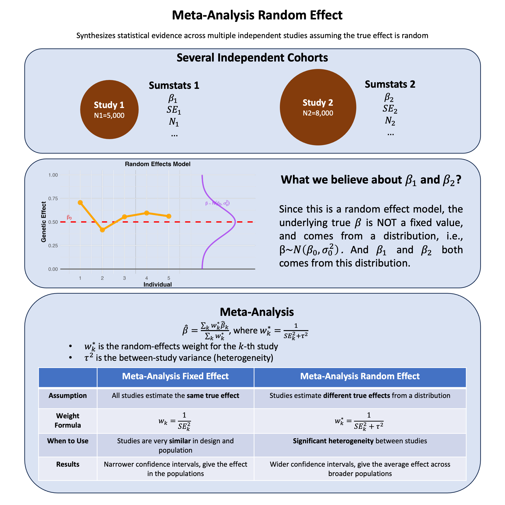

Meta-Analysis Random Effects#
Random-effects meta-analysis accounts for variability in effect sizes across studies by assuming each study estimates a different effect drawn from a shared distribution, thus modeling both within-study error and between-study heterogeneity.
Graphical Summary#

Key Formula#
In random-effects meta-analysis, we assume that the true effect sizes vary across studies. The weighted mean effect size is calculated as:
Where:
\(\hat{\beta}\) is the combined effect estimate across all studies
\(\hat{\beta}_k\) is the effect estimate from study \(k\)
\(w_k^* = \frac{1}{\text{SE}_k^2 + \tau^2}\) is the random-effects weight for study \(k\)
\(\tau^2\) is the between-study variance (heterogeneity)
\(K\) is the number of studies
The key difference from fixed-effects is that weights now include \(\tau^2\), which accounts for true heterogeneity between studies.
Technical Details#
What is Heterogeneity?#
Heterogeneity refers to the variability in effect sizes across different studies beyond what we’d expect from random sampling error alone. In other words, are the studies telling us the same story, or are they finding genuinely different effects?
Why does heterogeneity matter?
If studies are consistent (low heterogeneity), we can confidently combine them
If studies are inconsistent (high heterogeneity), we need to account for this variation in our analysis
Sources of heterogeneity:
Different populations (age, ethnicity, health status)
Different study designs or measurement methods
Different environmental contexts
Measuring Heterogeneity#
\(I^2\) statistic: The most intuitive measure - tells us what percentage of the observed variation comes from real differences between studies rather than random chance.
Interpretation:
\(I^2 = 0\%\): Studies are consistent - variation is just due to random sampling
\(I^2 = 25\%\): Low heterogeneity - studies are mostly similar
\(I^2 = 50\%\): Moderate heterogeneity - some real differences between studies
\(I^2 = 75\%\): High heterogeneity - studies are finding quite different effects
Example: If \(I^2 = 60\%\), this means 60% of the variation we see across studies reflects real differences in effect sizes, while only 40% is due to random sampling error.
Random Effect Model#
The Problem: When studies show heterogeneity, we can’t assume they’re all estimating the same true effect.
The Solution: Assume each study estimates its own true effect, but these true effects come from a common distribution.
Assumption: True effects follow a distribution
Where:
\(\beta\) = mean effect across all possible studies (what we want to estimate)
\(\tau^2\) = between-study variance (how much true effects vary across studies)
Each study \(k\) has its own true effect \(\beta_k\)
Aspect |
Fixed Effect |
Random Effect |
|---|---|---|
Assumption |
All studies estimate the same true effect |
Studies estimate different true effects from a distribution |
Weight Formula |
\(\frac{1}{\text{SE}_k^2}\) (only within-study variance) |
\(\frac{1}{\text{SE}_k^2 + \tau^2}\) (within-study + between-study variance) |
When to Use |
Studies are very similar in design and population |
Significant heterogeneity between studies |
Results |
Narrower confidence intervals, give the effect in the populations |
Wider confidence intervals, give the average effect across broader populations |
Example#
Imagine you’re trying to understand the effect of a genetic variant across different populations. You have two studies: one from a European population and another from an African population. Both studies found significant associations, but the effect sizes look different.
The question is: Are these studies measuring the same biological effect, just with some random variation due to sampling? Or do these populations truly have different effect sizes for biological reasons?
This is where the choice between fixed-effects and random-effects meta-analysis becomes crucial. If the populations truly differ (maybe due to different genetic backgrounds or environmental factors), then we shouldn’t assume they share the same effect size. Instead, we should model each study as having its own true effect, drawn from a distribution of possible effects.
We’ll simulate this scenario where two studies have genuinely different true effect sizes, then see how random-effects meta-analysis handles this heterogeneity compared to a naive approach that ignores it. The key insight is: When studies are heterogeneous, how do we properly account for both within-study uncertainty AND between-study variation?
We first generate the effects for the two studies from a distribution (rather than assigning a fixed value), and assign the variance between two studies:
rm(list=ls())
set.seed(18)
# Simulate 2 diverse cohorts where TRUE EFFECT SIZES are drawn from a distribution
K <- 2 # Number of studies
N <- c(5000, 8000) # Different sample sizes
# Different MAFs reflecting population diversity
mafs <- c(0.25, 0.40)
# RANDOM EFFECTS MODEL: True effect sizes drawn from distribution
# This is the key difference - betas are RANDOM, not fixed
beta_mean <- 1.0 # Mean effect size across all possible studies
tau_squared_true <- 0.3 # True between-study variance
# Draw true effect sizes from distribution
true_betas <- rnorm(K, mean = beta_mean, sd = sqrt(tau_squared_true))
Then we generate the data for each study and create a summary table.
# Generate data for each study
studies_data <- list()
for(i in 1:K) {
# Generate genotypes
genotypes <- rbinom(N[i], 2, mafs[i])
# Generate phenotypes using the RANDOM true effect
phenotypes <- true_betas[i] * genotypes + rnorm(N[i], 0, 3)
# Run regression
lm_result <- lm(phenotypes ~ genotypes)
# Store results
studies_data[[i]] <- list(
study_id = i,
n = N[i],
maf = mafs[i],
true_beta = true_betas[i],
observed_beta = coef(lm_result)["genotypes"],
se = summary(lm_result)$coefficients["genotypes", "Std. Error"]
)
}
# Create summary table
studies <- data.frame(
Study = 1:K,
N = sapply(studies_data, function(x) x$n),
MAF = sapply(studies_data, function(x) x$maf),
True_Beta = sapply(studies_data, function(x) x$true_beta),
Observed_Beta = sapply(studies_data, function(x) x$observed_beta),
SE = sapply(studies_data, function(x) x$se)
)
studies$P_Value <- 2 * pnorm(-abs(studies$Observed_Beta / studies$SE))
We first assess the heterogeneity for this meta-analysis:
# Calculate inverse variance weights for heterogeneity testing
w <- 1 / studies$SE^2
studies$Weight <- w / sum(w)
# Calculate naive weighted average (fixed-effects estimate)
beta_naive <- sum(studies$Observed_Beta * w) / sum(w)
# Calculate Q statistic (test for heterogeneity)
Q <- sum(w * (studies$Observed_Beta - beta_naive)^2)
df <- K - 1
p_heterogeneity <- 1 - pchisq(Q, df)
# I^2 statistic (percentage of variation due to heterogeneity)
I_squared <- max(0, (Q - df) / Q) * 100
cat("Heterogeneity Statistics:\n")
cat("Q statistic:", round(Q, 3), "\n")
cat("Degrees of freedom:", df, "\n")
cat("P-value for heterogeneity:", round(p_heterogeneity, 4), "\n")
cat("I^2 statistic:", round(I_squared, 1), "%\n\n")
if(I_squared > 25) {
cat("HETEROGENEITY DETECTED - Random-effects model is appropriate!\n")
} else {
cat("Low heterogeneity detected\n")
}
Heterogeneity Statistics:
Q statistic: 61.44
Degrees of freedom: 1
P-value for heterogeneity: 0
I^2 statistic: 98.4 %
HETEROGENEITY DETECTED - Random-effects model is appropriate!
So now we conduct the meta-analysis for the two studies:
# Estimate between-study variance (tau^2) using DerSimonian-Laird method
sum_w <- sum(w)
sum_w_squared <- sum(w^2)
tau_squared_est <- max(0, (Q - df) / (sum_w - sum_w_squared/sum_w))
# Calculate random-effects weights
w_random <- 1 / (studies$SE^2 + tau_squared_est)
studies$Weight_Random <- w_random / sum(w_random)
# Random-effects estimate
beta_random <- sum(studies$Observed_Beta * w_random) / sum(w_random)
se_random <- sqrt(1 / sum(w_random))
z_random <- beta_random / se_random
p_random <- 2 * pnorm(-abs(z_random))
cat("Random-Effects Meta-Analysis Results:\n")
results <- data.frame(
Estimate = round(beta_random, 4),
SE = round(se_random, 4),
Z_score = round(z_random, 4),
P_value = format(p_random, scientific = TRUE, digits = 3)
)
results
Random-Effects Meta-Analysis Results:
| Estimate | SE | Z_score | P_value |
|---|---|---|---|
| <dbl> | <dbl> | <dbl> | <chr> |
| 1.7491 | 0.3322 | 5.2659 | 1.4e-07 |
Let’s also look at the weights with and without considering heterogeneity:
# Compare weights with and without tau^2
weight_comparison <- data.frame(
Study = 1:K,
N = studies$N,
SE = round(studies$SE, 4),
Weight_Fixed = round(studies$Weight, 3),
Weight_Random = round(studies$Weight_Random, 3),
Difference = round(studies$Weight_Random - studies$Weight, 3)
)
weight_comparison
| Study | N | SE | Weight_Fixed | Weight_Random | Difference |
|---|---|---|---|---|---|
| <int> | <dbl> | <dbl> | <dbl> | <dbl> | <dbl> |
| 1 | 5000 | 0.0697 | 0.324 | 0.497 | 0.173 |
| 2 | 8000 | 0.0482 | 0.676 | 0.503 | -0.173 |